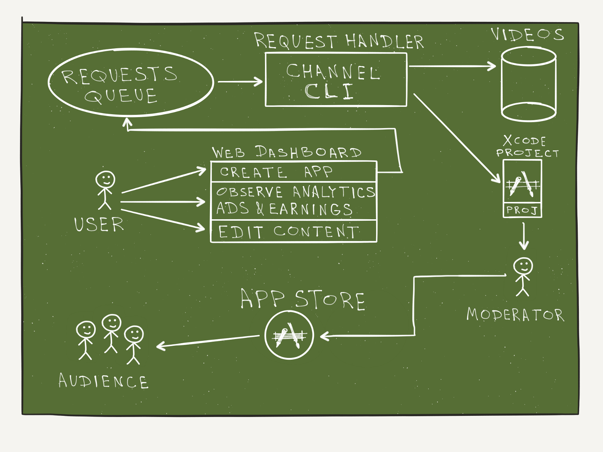

Apple TV and Meteor: First Impressions
Last year, I got an offer I could not refuse: to become one of the first developers to launch a brand new service for the Apple TV platform: Channel. Channel is a platform for video-bloggers to create and manage their own Apple TV channel.
This was challenging since we not only had to develop an application on a new platform, but we had to automate the process of creating multiple ones, on-demand. To keep ourselves productive, we based our system on Meteor and tvOS Client-Server app.
We want to provide openness to the community and release Channel as open source project under caffeinelabs/channel.build on GitHub. In this article I would like to share my humble experience from building Channel for the Apple TV. I hope that it will be insightful and inspirational for readers, and useful for the community of developers.
For non-technical inquiries, contact: caffeinelabs@caffeinelabs.co.
Conceptualizing Channel
Like many projects, it took the team some time and iterations to conceptualize Channel. Mostly because we needed to assimilate the specific nature of tvOS and our target audience.
During this process, we learned that a good amount of tvOS apps are either games or focused on playback of video-content. Another important thing to bear in mind is that user experience of Apple TV apps is unusual: Apple TV uses a focus model for navigation. People use the remote to move through interface elements such as movie posters, apps, or buttons, highlighting each item as they come to it.
Learning tvOS was tough. Early in the game there were almost no books or tutorials to get started and no centralized community of tvOS developers. There is an official tvOS documentation, but as you can imagine without a prior knowledge of Swift programming language and iOS development it is not really useful.
I'm not a fan of copying & pasting code snippets because I need to understand the code I'm working with, so learning some of iOS development and Swift programming language was essential for me. To dive into tvOS the easiest way was to develop a Client-Server app since it uses JavaScript programming language with which I'm well experienced. After development of prototypes for a couple of concepts the team finished conceptualized Channel.
Channel is a platform for video-bloggers to create and manage their own Apple TV channel
Essentially the idea is pretty simple. A user can register at Channel website, upload videos from YouTube/Vimeo or upload videos from file system and then easily publish an Apple TV app with this content. Sounds brilliant, isn't it? This is exactly what we thought!
Building Channel
High-level diagram of how Channel works
This is a high-level overview of the components from Channel. Let's take a closer look at each of them.
Web App
The website is based on Meteor web framework and allows users to register and manage their apps through the dashboard: upload videos, publish an app, see analytics charts, etc. Here are the list of features I worked on:
- Integration of Bootstrap based SB Admin 2 dashboard in the Meteor app. This GitHub repo helped a lot, but I've adapted this solution for our needs.
- Analytics charts for a number of app launches and video views using Flot.js.
- Stripe subscriptions: custom web-form with validation on the client side and handling subscription's life cycle on the server side.
- Design and implementation of REST API endpoints necessary for Apple TV apps: get videos, push analytics, etc.
- Background jobs queue and background worker app to process jobs from the queue. Background workers may be distributed on multiple machines.
Channel Dashboard
Apple TV App
The Apple TV app is a customizable Xcode template project. User's app is generated from this project automatically with the CLI tool. The app has two parts: native part written in Swift and TVML/TVJS part written in JavaScript.
The native part is essential for every tvOS app. At the very least It contains code to launch JavaScript part of the app. I also made the Xcode project configurable through project's property list file, so that every app generated with the CLI tool may have its own settings such as URL for app's video content, app name, etc.
Another big feature of the native part is In-App Purchases. This was my first serious Swift experience. I implemented purchases API using JSExport protocol which allows to export Objective-C instance classes and their instance methods, class methods, and properties to JavaScript code.
And here is the list of TVML/TVJS part's features I worked on:
- All code is written in ES6 using Babel.js. The build process is handled by Webpack.
- Self-made templating for TVML using Mustache.js. I also implemented special attributes for TVML tags so that I could bind data, handle events, etc. This allowed me to write a lot less code and write it in declarative manner rather than do tedious processing of DOM manually in JavaScript for every TVML element.
- Networking layer for jQuery-like AJAX requests using ES6 Promises.
- Support for Model-View-Presenter pattern. Every TVML template use special element's attributes to call appropriate presenter's methods. This simplified development dramatically.
tvOS Simulator with Channel app
CLI Tool
The command line tool written in Ruby provides a bunch of commands to automate apps generation: downloading of user's videos, creating Xcode project, updating database, etc. This is the second Ruby gem I implemented. The gem is mostly based on Thor which is very easy to use and the syntax is very clear. I called CLI as chan and implemented the following commands for it:
- chan create - create a ZIP archive called channel recipe with all necessary data to generate Xcode project for a channel. This is necessary for reproducibility.
- chan generate - generates Xcode project from a channel recipe.
- chan import - imports videos for a channel from YouTube to Amazon S3 storage. The import is done using youtube-dl command-line program.
My Thoughts on Apple TV
tvOS is the first Apple's platform which natively supports declarative UI written in TVML and app logic written in JavaScript apart from the native way. I'm really excited to use TVML/TVJS. It gives an opportunity to create a simple, good-looking UI which follows Apple's design guidelines using a markup language. It really speeds up the development!
One major advantage of using TVML/TVJS is that you can dynamically update this part of your app without submitting new version of the app to the App Store. This is possible because TVML/TVJS code is hosted separately on your server.
The downsides are:
- Declarative UI is very inflexible. You are limited to Apple's TVML templates and there is currently no native way to implement your own templates like you can do it, let's say, in Microsoft's XAML. So developers are forced to implement customization on their own like this. It's quite painful comparing to similar technologies.
- CSS support is also limited: forget about CSS you know, tvOS uses its own subset of CSS and you will be very upset with limitations at times.
- There is no modern JavaScript architecture for apps. This framework addresses this issue. I implemented my own kind of framework too since there were no any solid solutions at the time.
- Apple TV Simulator doesn't support all features of tvOS. I had to buy real Apple TV to work with In-App Purchases. Also the remote in simulator is very inconvenient to use. Though this is possible to use real remote with simulator, but I prefer to develop on real device instead.
- Input text on Apple TV is a pain. But input your test account's password every 15 minutes is a double pain. Though I turned off password-protection for my test account, Apple TV ignores these settings for some reason. Good news: since tvOS v9.2 Apple TV supports Bluetooth keyboards. I'm going to buy one.
Though the technology is still immature I believe that Client-Server apps will take their place:
- You are not limited to TVML/TVJS only. You can develop Hybrid apps and call native Swift/Objective-C code from JavaScript. This is huge. I used this technique to implement In-App Purchases.
- It's only a matter of time when good frameworks and libraries simplifying tvOS development come to the stage.
- Hopefully Apple will add more features to TVML/TVJS API to make it more convenient to use out of the box.
- The community of tvOS developers is growing. There is a Slack Community I became one of the first members of. There is a great collection of tvOS designs for fresh ideas and inspiration. And there are growing amount of tutorials on how to get started. And more stuff is coming out. At the time of my start there was almost nothing about Apple TV available.
My Thoughts on Meteor
At first Meteor seemed to be a silver bullet: a modern JavaScript web framework which allows to write less and get more because of the reactivity. I was so excited with Meteor so that I used it in one of my pet projects too. Meteor is really popular now, but let's put aside the hype and talk about pros and cons of the framework.
Meteor is less restricted out of the box than other web frameworks, e.g. Ruby on Rails. There are not that much strict rules on how to structure your project's code. The framework has a gradual learning curve: it's enough to know JavaScript, MongoDB and some basic concepts of Meteor such as reactivity, publications, subscriptions and you are ready to roll out fully functional app. This is not the case with Ruby on Rails since Ruby introduces a lot more “magic” you need to deeply understand before you can use it efficiently. So my opinion is that Meteor is probably the best choice out there for rapid prototyping.
My favorite features of Meteor are the following:
- You have a choice: Spacebars/Jade, JavaScript/ECMAScript 6/CoffeeScript, CSS/LESS/SASS. The good thing is that everything is built in single files automatically no matter which language do you use. You can use multiple languages in a single project. Personally I experimented with ES6+CS and Spacebars+Jade in Channel Meteor app.
- Reactivity makes things really easy when you understand it. No more need to write tons of code to update data in all places it is presented in. Just use Reactive Variables and Computations (a code which reruns on reactive data changes) and that's it.
- The client and the server were never be so integrated to each other. You can work with your data identically on both the client and the server because of JavaScript on both sides, Minimongo on the client and publications & subscriptions mechanism.
And the downsides of Meteor I faced with Meteor v1.2.1:
- Poor package management. There is no native support for NPM packages and there is no way to install a package for specific environment unless this package is built for this specific environment. E.g. meteorhacks:cluster package was causing issues on my development machine and I wanted to disable it for development environment. There is no way to do it like you can do it, let's say, in Ruby's Gemfile. The only acceptable way I found was this hack.
- Packages may not be the same thing as their non-Meteor version. E.g. mquandalle:jade package. It states that it provides support for the Jade template engine but actually the support is incomplete and the package may work in a different way in some cases (see this issue for example). This is very confusing.
- There is no way to import modules in JS files and customize load order of files. This seems to be insignificant at first. But the more code you write, the more issues you have related to the load order of files. What if you want to put some common code to a single file for subsequent use of it in different parts of the app? You need to find a hacky way to do it dealing with Meteor's load ordering rules.
The Meteor v1.3 release is a major step forward and it solves some of the problems mentioned above, but I haven't migrated Channel to the new version yet. One of the great new features is a built-in support for ES2015 modules and NPM packages.
Summary
This was a fantastic experience and I'm glad to make source code public on GitHub. Arguably the Apple TV platform is still immature and Apple needs to improve the development and user experience here and there. But the overall impression is positive.
What I Learned
- Design of a complete working system made up of components implemented with different technologies.
- xCode IDE and Apple's development infrastructure: iTunes Connect, Apple Developer, etc.
- Swift programming language.
- tvOS/iOS development of Native apps with Swift.
- tvOS development of Client-Server & Hybrid apps with TVML/TVJS & Swift.
- Meteor web framework.
- ECMAScript 6 & CoffeeScript programming languages.
- Jade & Handlebars & Mustache markup languages.
- Ruby gems development.
How I Learned
-
tvOS Apprentice book by the raywenderlich.com Tutorial Team
I learned a lot from this book. The best thing about this book is that it doesn't assume you to be experienced with Swift. If you are a complete beginner in iOS/tvOS as was me then this book is for you. Also it was the first solid book on tvOS development available in the Internet. -
tvOS Apple Developer Documentation
There is no way to avoid reading this and become confident with tvOS. Though it was cumbersome to read this for the first time, later on I used this a lot for reference during development. -
Discover Meteor by Tom Coleman & Sacha Greif
This book is available in different languages and actually is one of the best introductions to Meteor. -
Meteor Documentation
The official documentation contains a lot of definitions of basic Meteor concepts and explains Meteor methods in details.
What's Next
From this point on I'm focused on supporting Channel, there are plenty of things to improve and consider. In the next couple of weeks I will post a series of programming tutorials on Channel related features. And I'm going to take a new big leap forward without hesitation, without once looking back. But that's another story...
About Me
I'm the founder of a small ideation company that has helped bring new concepts and products to market. One of my first customers was my former colleague and friend Javier Luraschi, Founder of CaffeineLabs, with whom I spent 6 months working side-by-side to build Channel from scratch. Previously, I worked as a full-stack developer in various projects and companies. Since then, I've decided to stay closer to startups since they keep me fresh, sharp and close to the products I love.
If you need help materializing a product, talk to me. You can reach me by email michael.kalygin [at] gmail.com.